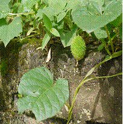

HORT 281 :: Lecture 11 :: ORIGIN, AREA, PRODUCTION, VARIETIES, PACKAGE OF PRACTICES FOR BITTER GOURD

Origin, area, production, varieties, package of practices for BITTER GOURD
(Syn: Bitter cucumber, Balsam pear)
(Momordica charantia L.) (2n = 22)
(Hindi: Karela)
Bitter gourd is an important vegetable in South Indian states, particularly in Kerala and is grown for its immature tuberculate fruits which have a unique bitter taste. Fruits are considered as a rich source of vitamins and minerals and 88 mg vitamin C per 100 g. Fruits are used after cooking and delicious preparations are made after stuffing and frying. During periods of glut in market, fruits are sliced, partially boiled with salt and dried under direct sunlight and stored for months. This is used after frying. Bitter gourd fruits have medicinal value and are used for curing diabetes, asthma, blood diseases and rheumatism. Drinking fresh bitter gourd juice is recommended by naturopaths. Roots and stem of wild bitter gourd are used in many ayurvedic medicines.
Origin and distribution
Bitter gourd is of old world origin and is a native of tropical Asia, particularly in the Indo Burma region. It is widely grown in India, Indonesia, Malaysia, China and tropical Africa.
Botany
Genus Momordica, to which bitter gourd belongs, has the following four species in India.
M. charantia (cultivated bitter gourd)
M. charantia var. muricata (Highly bitter and small fruited wild bitter gourd)
M. dioica (kakrol, spine gourd)
M. cochinchinensis (sweet gourd of Assam)
M. balsamina – Immature fruits are used as vegetable or picked.
All the species have 2n=2x=28.
|  |
Momordica cochinchinensis
M. charantia is propagated through seeds and is monoecious .M. dioica and M. cochinchinensis are propagated through underground tubers and are dioecious in nature. Both species have small fruits covered with spines. Ram (2002) reported main difference between the two species.
Kakrol or sweet gourd (Momordica cochinchinensis Roxb) |
Kartoli or spine gourd |
Roots develop bigger tuber |
Roots develop small tuber. |
Leaves are bigger. |
Leavers are small. |
Flowers large and white to light yellow in colour. |
Flowers small and yellow in colour. |
There are three small circular dots at the base of petals which are deep blue. |
No circular dot on the base of petals. |
Anthesis during early morning (3.30-6.30 hours) and flowers take 72 hours to open. |
Anthesis during evening (16.30-18.00 hours) and flowers take 7-22 minutes to open. |
Fruits are large and oblong |
Fruits are small and round to oval. |
Individual fruit weight is around 60-80g and attains upto 500g. |
Individual fruit weight is around 10-15 g and attains upto 30g. |
Fruit ripening starts from periphery to inner |
Fruit ripening starts from inner to periphery. |
Fruit light green to light yellow in colour |
Fruits dark green in colour. |
Tough spines on fruit. |
Smooth and false spines on fruit. |
It takes 26 days to reach edible maturity from days to bud formation |
It takes 20 days to reach edible maturity from days to bud formation. |
Short flowering and fruiting period |
Flowering and fruiting continue for long period. |
Bitter gourd is a monoecious annual climber with duration of 100-120days. Leaves are palmately 5-9 lobed. Flowers are axillary with long pedicel and are yellow in colour. Stamens are 5 in number with free filaments and united anthers. Stigma is divided. Fruit is pendulous, fusiform, ribbed with numerous tubercles. Bitterness of fruit is due to the presence of an alkaloid, Momordicin. Anthesis is from 4.00 a.m. to 7.00 a.m. Anther dehiscence takes place in between 5.00 a.m. and 7.30 a.m. Stigma is receptive 24 hours before and after anthesis.
Varieties
Consumer preferences in bitter gourd vary from region to region depending on size, colour, presence or absence of tubercles / ridges and bitterness of fruits. Accordingly a number of varieties are developed in India and details are furnished below:
Developing institution |
Variety |
Special features |
IIHR, Bangalore |
Arka Harit |
Fruits short, spindle shaped, green coloured with smooth regular ribs and moderate bitterness. Yield 9-12 t/ha. |
IARI, New Delhi |
Pusa Vishesh |
Selection from a local collection and suitable for growing during summer. Fruits glossy green medium long and thick. |
|
Pusa Do Mausami |
Fruits dark green, club like with 7-8 continuous ribs. Fruit weight 100-120 g. Yield 12-15 t/ha. |
|
Pusa Hybrid 1 |
Fruits medium thick, long and gloss green, yield 20 t/ha in 120 days |
Kerala Agricultural University |
Priya (VK1)* |
Extra long green spiny fruits with white tinge at stylar end, av. Fruit length 39 cm. av. Fruit weight 235 g. productivity 24.5 t ha-1 |
|
Preethi(MC 4)* |
Medium sized white fruits with spines, av. Fruit length 30 cm, av. Fruit girth 24 cm, av. Fruit weight 0.31 kg. productivity 15.0 t/ha-1 |
|
Priyanka |
Large white spindle shaped fruits with smooth spines, thick flesh and less seeds. Av. Fruit length 25 cm. av. Fruit girth 20 cm. av. Fruit weight 0.30 kg. Productivity 28.0 t/ha-1 |
Tamil Nadu Agricultural University |
CO.1 |
Fruits dark green with medium length (20-25 cm) and weight (100-120 g). Yield 14 t/ha. |
|
Coimbatore Long Green |
Extra long fruits (60 cm) with dark green colour. |
|
MDU.1 |
Fruit weight 300-450 g. yield 15-18 t/ha. Induced mutant with long (30-40 cm) greenish white fruits, fruit length 30-40 cm, yield 30-35 t/ha. |
|
Coimbatore Long White |
Extra long fruits (60-65 cm) with white colour, yield 15 t/ha. |
|
COBgH 1 |
F1 hybrid developed by crossing MC 84 x MDU1. Fruits are light green in colour, plumpy with more warts, each weighs 200g.-300g. Yields 44.40 t/ha in 115-120 days. It is rich in momordicin (2.99 mg per 100g). |
Konkan Krishi Vidya Peeth, Dapoli |
Konkan Tara |
Fruits green, prickly, medium long (15-16 cm) and spindle shaped. Yield 24 t/ha. |
Punjab Agricultural University, Ludhiana. |
Punjab 14 |
Plants bushy and bear light green fruits with average weight of 35 g. Yield 14 t/ha. |
CSAUA&T. Kanpur |
Kalyanpur Baramasi |
Fruits long (30-35 cm), light green, thin and tapering, tolerant to fruit fly and mosaic, yield 20 t/ha in 120 days. |
MPKV, Rahuri. |
Hirkani |
Fruits dark green, 15-20 cm long, spindle shaped with warts and prickles, yield 14 t/ha in 160 days. |
|
Phule Green |
Fruits dark green, 25-30 cm long, prickled, tolerant to downy mildew, yield 23n t/ha in 160-180 days. |
Climate and soil
Bitter gourd is a warm season crop with wide adaptability. Ideal temperature for its growth and flowering is 25-30oC. Crop can be grown even in places of slightly lower temperature and high rainfall areas. Production of female flowers, fruit set and growth of plant are seen affected above 35oC and will be susceptible to viral infections. As seeds have a hard seed coat, germination is affected below 10oC.
Well drained and fertile sandy loam or silt loam is ideal for the crop.
Season
In hills, the crop is sown during April-May. In plains where season is early, bitter gourd is sown during January-March in states like Rajasthan and Bihar. In states where winter is late and prolonged, sowing is done in February-March. In areas where winter is mild, crop is sown throughout the year. In Kerala, when bitter gourd is grown in an intensive way, sowing is done during January-February for summer crop, May-June for kharif crop and September for rabi crop.
Kakrol and sweet gourd are normally grown during rainy season in fertile soil rich in humus. Performance is better under partially shaded condition.
Land preparation and sowing
Preparation of land, sowing and other cultural practices for bitter gourd is similar to that of cucumber except that bitter gourd is trained to bower or cut branches of trees. In Kerala, the crop is cultivated in an intensive way. Land is ploughed to a fine tilth and pits of 60 cm diameter and 30-45 cm depth are made at a spacing of 2.0-2.5 x 2.0 – 2.5 m. well rotten farmyard manure @ 20-25 t/ha is applied in pits and filled with top soil up to 3/4th height and 4-5 seeds are sown in each pit @ 5.0-6.0 kg/ha.
Since bitter gourd seeds have a hard seed coat, soak 2-3 months old seeds overnight in cold water. Seeds are then stored in moist cloth and kept for one or two days for germination. Seeds immediately after germination are sown in pits. Mechanical scarification is effective for germination of seeds soon after harvest.
Irrigation
Bitter gourd cannot tolerate drought or water stagnation. Frequent irrigation at 2-5 days interval especially at fruiting stage is necessary for high yield. Under Kerala condition, crop is irrigated at 3-4 days interval during initial stage and at alternate days during fruiting.
Manures and fertilizer application
In addition to 20-25 t/ha of farmyard manure, a fertilizer dose of 70 kg N, 25 kg P2O5 and 25 kg K2O / ha is recommended by Kerala Agricultural University. Initial dose of farmyard manure is applied in pits and incorporated with top soil. Apply 1/3rd N and full dose of P and half dose of K either just before sowing or 10-15 days after sowing as basal dose. ½ K can be applied 45 days after sowing. Remaining fertilizers can be applied in several split doses (5-6) at fortnightly intervals. Since bitter gourd is harvested frequently, fertilizer also should be applied in several splits.
Drenching pits with cow dung slurry at fortnightly intervals, top-dressing with poultry manure and organic cakes are practiced by bitter gourd farmers in Kerala.
Application of fertilizers:
Apply 10 k of FYM per pit (20 t/ha) 100 g of NPK 6:12:12 per pit as basal and 10 g of N per pit 30 days after sowing.
Interculture
Being a shallow rooted crop, deep intercultural operations should be avoided. Land, particularly pits, should be kept weed-free by frequent hand weeding, hoeing and light earthing up along with application of fertilizers. Excess lateral branches, if any, may be pinched off for allowing plants to reach bower height at the earliest. Erect bower when plant starts vining. Plants may be trailed to bower by erecting small twigs in pits. Erection of bower or pandal is a costly operation and nearly 20% of cost of production is for making bower alone. Height of bower is adjusted as 2 m and is usually made of bamboo poles, G1 wire and thin coir or plastic wire. Bower once erected can be utilized for raising at least three crops.
Plant growth regulators
Application of several plant growth regulators like MH (50-150 ppm), CCC (50-100 ppm), Ethrel (150 ppm), silver nitrate (3-4 ppm), boron (3-4 mg/ha) at 2-leaf stage and 4 leaf stage increases the female flowers and yield in bitter gourd. Soaking of seeds with Ethrel or boron (3-4 mg/kg) also increases yield in bitter gourd.
Harvesting
Harvesting starts 55-60 days after sowing. Picking is done when fruits are fully grown but still young and tender. Seeds should not be hard at the time of harvest. From a good crop, 15-20 harvests are possible and harvesting is done twice a week. If fruits are allowed to ripen on vines, further bearing is adversely affected.
Fruits after harvest are packed in thin gunny bags or directly packed in tempo and marketed. Since keeping quality of fruits is less, fruits should be marketed without any delay to nearby markets on the same day itself. Otherwise tubercles will be dropped and freshness and appearance of fruits will be adversely affected.
Yield: 11-25 t/ha.
Seed Production
For seed purpose, fruits are harvested when fruits turn yellow in colour. Seeds along with red placenta are rubbed against a hard surface and washed in running water and dried under shade. Seed yield: 200-250 kg/ha.
*********
- Mode of pollination in bitter gourd
a. Self pollination |
b. Cross pollination |
c. Often cross pollination |
d. None |
- The chromosome number of bitter gourd
a. 22 |
b. 24 |
c. 56 |
d. 84 |
- Pusa Visesh is a variety of bitter gourd suitable for ______ season
a. Rainfall |
b. Summer |
c. Rabi |
d. Kharif |
- First harvest in bitter gourd starts from __________
a. 20 |
b. 45 |
c. 60 |
d. 70 |
- Total crop duration of bitter gourd is _______ days after sowing
a. 120 days |
b. 140 days |
c. 130 days |
d. 100 days |
| Download this lecture as PDF here |